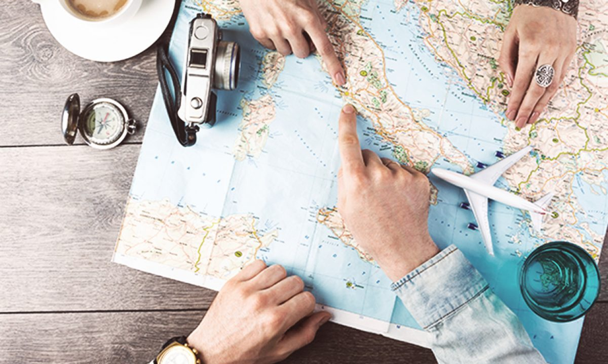

En vuelos nacionales es recomendable llamar a la aerolínea 24 horas antes. Te recordamos que debes presentarte en el mostrador de facturación de la compañía un mínimo de 90 minutos antes de la salida.Todos los vuelos internacionales se deben reconfirmar 72 horas antes de la salida. Para hacerlo basta con llamar a la compañía aérea o consultar, con el localizador de reserva, la página de AMADEUS checkmytrip.En estos vuelos, hay que presentarse en el mostrador de facturación con un mínimo de 2 horas de antelación a la salida del vuelo y un mínimo de 3 horas en caso de que el destino final sea Estados Unidos.Si tu reserva es con una compañía low-cost es imprescindible que reconfirmes siempre el vuelo 48 horas antes de la salida.
En vuelos nacionales es recomendable llamar a la aerolínea 24 horas antes. Te recordamos que debes presentarte en el mostrador de facturación de la compañía un mínimo de 90 minutos antes de la salida.Todos los vuelos internacionales se deben reconfirmar 72 horas antes de la salida. Para hacerlo basta con llamar a la compañía aérea o consultar, con el localizador de reserva, la página de AMADEUS checkmytrip.En estos vuelos, hay que presentarse en el mostrador de facturación con un mínimo de 2 horas de antelación a la salida del vuelo y un mínimo de 3 horas en caso de que el destino final sea Estados Unidos.Si tu reserva es con una compañía low-cost es imprescindible que reconfirmes siempre el vuelo 48 horas antes de la salida.
Sí, por motivos de seguridad, para alguna reservas sólo podemos aceptar una transferencia o ingreso bancario como forma de pago. Si se da ese caso, al finalizar el proceso de reserva el sistema te dará todos los datos bancarios para que puedas efectuar el pago.Por favor ten en cuenta que Destinos Seguros no garantizará ninguna reserva o tarifa ni emitirá ningún billete de avión hasta que el importe total del pago no esté en una de las dos cuentas habilitadas para el pago.